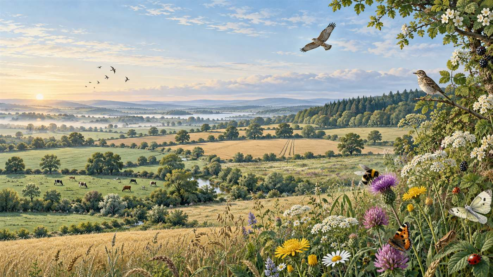
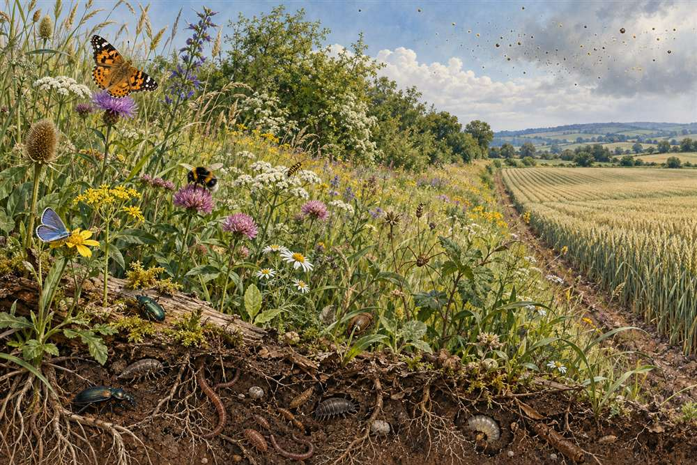

Biodiversity under global change
Quantifying how land use, crop choice and atmospheric nitrogen deposition affect species richness and abundance.

Biodiversity · Land use · Global change
范顺祥
Postdoctoral Researcher · Institute of Botany, Chinese Academy of Sciences
Original illustration inspired by biodiverse agricultural landscapes
ResearchGate profile snapshot · October 2026
About

I investigate how land use and global environmental change reshape biodiversity—and how better landscape design can help nature persist.
My work combines global biodiversity databases, spatial data, remote sensing and statistical modelling. Current themes include the effects of crop type and atmospheric nitrogen deposition on biodiversity, ecological network design, ecosystem services, and land–atmosphere interactions.
I am currently a postdoctoral researcher at the Institute of Botany, Chinese Academy of Sciences. I completed my PhD training at China Agricultural University and spent a year with the Global Biodiversity Change group at University College London.
Research
From arthropods in field margins to global patterns of land use and climate.
Quantifying how land use, crop choice and atmospheric nitrogen deposition affect species richness and abundance.
Designing ecological networks and balancing ecosystem-service supply, demand and ecological risk.
Using Earth observation to understand vegetation dynamics, land-cover change and land–atmosphere feedbacks.

Selected work
Shunxiang Fan, Tim Newbold, Jan C. Axmacher, Charlotte L. Outhwaite, Yi Zou, Zhenrong Yu & Yunhui Liu
DOI ↗Linfei Yu, Guoyong Leng, Qiuhong Tang, et al.
DOI ↗Shunxiang Fan, Tim Newbold, Teja Tscharntke, Wenhui Tang, Zhenrong Yu & Yunhui Liu
DOI ↗Contact